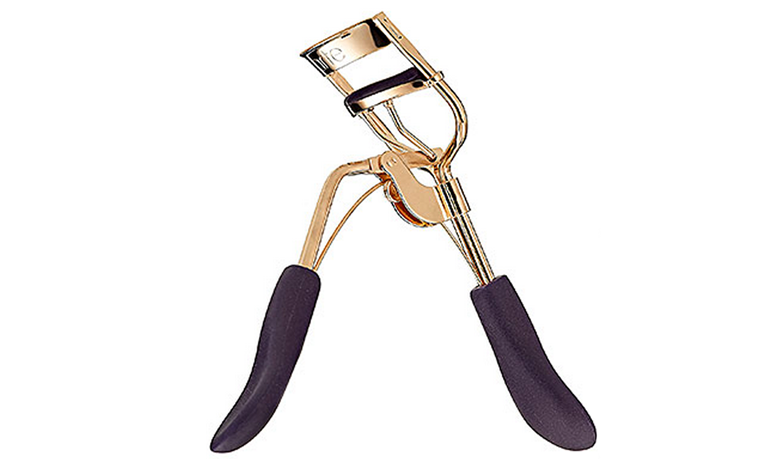
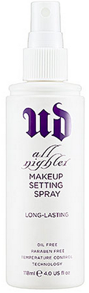

I’m probably super late to this party but I was using a Revlon cheapo eyelash curler for years and at least for me it didn’t do much. I would see all over the place, CURL YOUR LASHES as part of your quick 5 minute makeup routine and I would think, man that doesn’t do anything for me. WELL. I decided to try out this one by Tarte and IT’S THE BOMB! It literally curls SO MUCH I can’t BELIZE it! It’s worth the cost, plus this one that I bought came with a little sample size mascara and I’m never one to turn down trying a new mascara.
Curls
April 26, 2013 by
Set It And Forget It
April 25, 2013 by

First of all, do not get the impression from the title of this product that I’m an ALL NIGHTER type of girl unless by that you mean my kids are not sleeping and I’m up all night in that kind of way. But I can promise you I am not wearing makeup while my kids are trying to stay up all night and suck my will to live out of me. Â I originally bought this to try and set my makeup so it stays longer DURING THE DAY. I really only have time to apply my makeup first thing in the morning, so if I have dinner plans that night I don’t have time to start all over if my makeup has just melted off throughout the day. This stuff is pretty great because I can do my makeup first thing in the morning and spray a few sprays when I’m done and it really does set it for the day.
BB Beautiful
April 23, 2013 by
I have been using the same make up for over 2 years (Bare Minerals) until I recently stumbled upon this little gem and I swear I will never ever go without it again in my life. It is that good. I have drank the BB cream water and it TASTES GOOD. It boasts that it primes, perfects, hydrates and corrects. My skin actually feels smoother and possibly even less blotchy after using it for a month or so now. Â My favorite part is the flawless appearance it gives minus the look and feel of heavy make-up. I like looking done up, but I CAN NOT STAND the way cakey foundation feels on my face. I need light, people. Give it a try. You won’t regret it.Â
Photo Finish
February 22, 2013 by
I got my haircut this afternoon, which means I usually stock up on new hair products! My salon just started carrying makeup, so on impulse, I picked up Smashbox Photo Finish primer.
Thoughts anyone? Good or bad purchase, we shall see!
Highlight of My Life
February 18, 2013 by
This stuff, ladies, is a must have for glowing dewy looking skin! ELF Shimmering Facial Whip is $1 and boy does it do so much more than a dollar’s worth to your makeup routine. I apply this to the tops of my cheek bones, corners of my eyes, bridge of my nose and right above my upper lip. It’s fantastic! And what’s there to lose… $1???Â
The Perfect Pink Pout
January 18, 2013 by
I believe I’ve sung the praises of Maybelline’s Baby Lips previously in the shade of Cherry Me (still a great shade for that I just ate a popsicle look) , but I recently stumbled upon a color that I can only describe as the perfect baby pink. It’s like my lips are baby soft AND the perfect shade of baby pink without looking too matte or too…how do you say it… stripper as to me some super light pink glosses tend to look in my opinion. I find myself reaching for this color all day every day this winter. And for under $5 you can’t lose!
My Daily Makeup
January 14, 2013 by

Let’s talk makeup! So I’m of the stick to the same brand forever and ever amen variety in the makeup department but I have switched things up a bit in the last year and I wanted to fill y’all in on it. This is the stuff I wear every single day…
Long-Wear Cream Shadow – Ballet Pink This is the most recent addition to my lineup and the color shown here doesn’t really portray it correctly but it’s the perfect base shade. I put this all over my lid all the way up to under my eyebrow. In the past I have had problems with cream eye shadows…I seem to have a sensitivity to whatever is in them and they make my eyes hate being alive. This doesn’t bother me in the least. AND the great thing about this is that it makes whatever you put on top of it a truer shade, it pops out more.
Shimmer Wash Eye Shadow – Heather Mauve I just love this color. It’s sort of a mashup of purple and grey and taupe with a touch of shimmer. And I am NOT a shimmer girl.
Long-Wear Gel Eyeliner – Black Ink I have been using this for years and I will never ever go back to a pencil, you can’t make me.
Laura Mercier Secret Camouflage – SC2 My favorite concealer thus far. I use a fat concealer brush from Sephora to apply it.
Laura Mercier Oil Free Suprême Foundation – Blush Ivory I also use a brush to apply this Laura Mercier foundation. Once I started using a brush to apply foundation I don’t think I could go back to using a sponge or my fingers, I just think it goes on so much better with a brush.
Maybelline New York Dream Bouncy Blush – Peach Satin This was me dipping my toe in the water with regards to cream blush. I didn’t want to commit to something expensive because I wasn’t sure if I was going to like it or not. So I went cheap and hit the lotto. When I mentioned that I had started using this to Der she told me to trust her and use it with a regular brush even though its cream. So I had a leftover foundation brush from a set that I wasn’t using and went for it and she was SO right! Thank you Der!
Nars Semi Matte Lipstick – Pigalle This is also a fairly recent purchase. I’ve been using Bobbi Brown Lipstick in Brownie for a long long long time and it was getting low and just thought I might try something new. I LOVE this color.
What’s new with y’all? What have y’all recently found and loved?
3-fer Drugstore Product Review
January 17, 2012 by

I am a diehard drugstore cosmetic girl. It’s not that I don’t like department store lines, I do purchase certain things like foundation and powder there; however, when it comes to eye shadow, blush, lip gloss, mascara, eyeliner, lipstick, etc–I love me some Loreal, Revlon, and various other drugstore brands. Plus I really dig the prices, considering they are at least half of what you can expect to pay at a department store.
So….during my recent trip to CVS, there were huge displays of all the brand’s new products and I picked up three to give them a try. I LOVE THEM ALL, so need to tell you about them.
- Nuance Salma Hayek Lasting Wear Gel Eyeliner ($9.99)- I can’t say enough good things about this eyeliner. I was very surprised and pleased. I’m ALWAYS on the hunt for a good one, because one of the most important things to me is the ease of application. For me, the harder it is to apply, means the worse my eyeliner ends up looking. I sometimes end up looking like a 3 year old who has drawn connect the dots with my eye lids. So I was thrilled to see that this gel pencil glides on. Great for a clean, subtle lining, but also works really well when smudged for a bolder look. Another benefit is it’s lasting power. Granted I wore this over the weekend (for whatever reason, make up doesn’t stay on as long or seems to wear faster at work), but it really seemed to stay on and not end up on my eye lids, corner of my eyes, or the always lovely black under eye look.
- Loreal Infallible Eyeshadow (7.99) – This was my favorite of the three. This shadow comes packed tightly in a small little pot and even has a cap within a cap that keeps this half loose/half packed shadow compressed. The coverage is great on this, as it totally exceeded my expectation of all day eye shadow. I got the Hourglass beige, as I have been on a nude/neutral kick lately, but I plan on going back for more colors since I liked it so much.
- REVLON Photoready Color Correcting Primer ($12.99) – this stuff is perfect for my combination (pizza face) skin that sometimes leaves my face looking blotchy, red and uneven. I put this on after my moisturizer and before my foundation. It evens out my skin tone and creates a smooth canvas to apply foundation on. Its not greasy, but its not too dry either. Perfect. I’ll definitely continue to use this.
There you have it. Another thing that wasn’t new that I picked up during my trip was ol’ faithful Loreal Telescopic Mascara. I’ll try other mascara, but I always come running back to this.
Beauty Discoveries
January 11, 2012 by

I thought I’d share some stuff I’ve used in the last few months either via a sample or I’ve purchased and been using, that I’ve fallen in love with.
- Biodroga Intense Moisture Formula Eye Care-I have been on the hunt for an eye cream for what seems like EVER. The problem I run into is that as the day goes by my eyes start burning from certain eye creams. I got a sample of this a while back and used it for a good week without any problems…that was a first! So I bit the bullet and bought it and I have no clue if it’s going to make me look 20 years younger but I figure eye cream that doesn’t cause massive burning is better than no eye cream at all. Right?
- Aquage Beyond Shine Spray-I use this when I’m done with my hair, but I spray it in my hand first and then run my hands through my hair. Â If I spray it directly on my hair it will look DUUUURTEEEEE and I might as well start all over.
- Nars Pro-Prime Pore Refining Primer – Oil-Free-I read somewhere that as you get older you will want to use a primer under your foundation so that it falls into all those fine lines and wrinkles and your foundation will go on smoother. Â I’ve tried a couple and then got this as a sample from Sephora and LOVED it. I feel like it makes my pores noticeably smaller and my foundation goes on smooth but also I’m not an oil slick by the end of the day.
- Redken Hot Sets 22 Thermal Setting Mist-I use this prior to flat ironing my hair. Â I like it. I mean there are a lot of different ones out there and I just thought I’d change it up a bit. Â Good stuff.
- Rosebud Salve in a Tube-I’m a fan of the Rosebud Salve in the little tin, so when I saw this (and I may be behind the times on this being in a tube) I instantly bought it. Â It’s always nice to change up the lip balm every now and then and I love the way this smells.
- Jonathan Product Weightless Smooth No-Frizz Hydrating Balm-I’m going to venture to say that this product has been LIFE CHANGING. And I’m two for two on Jonathan Product stuff. I think I’ve said this before but my hair is very thick and naturally wavy but not always in a good way, so I straighten my hair when I want to look presentable. Â However, living in the Houston area with humidity 11 out of 12 months of the year, straightening my hair can be challenging. Â UNTIL NOW! I got this stuff as a sample and I just thought I’d give it a shot and OMG the difference it has made in getting my hair straight and KEEPING it straight once I walk outside is unbelievable. Â It’s a keeper.
- Finishing and Blending Face Antibacterial Makeup Brush #955 – Studio Line by bdellium tools-I’ve always been the kinda girl that put on her foundation with a sponge, and thought I might try a brush recently and this one didn’t disappoint. Â It’s kinda crazy how different foundation can look with a brush as opposed to a sponge. Â Definitely worth a shot.
Baby Lips
January 5, 2012 by
I don’t know whether it’s this cold/plague that I have come down with or the drier weather around these parts, but my lips have been horrendously dry and scaly. Enter this.
I purchased this in Peach Kiss for it’s shimmery light pink color several weeks ago, not knowing it would be my saving grace when I thought my lips just might peel right off. I literally used this all day long and have seen DRASTIC improvements in the condition, feel and overall grossness of these chapped lips of mine. I would say this one is a keeper fo sho!


{kind=link}
Recent Comments